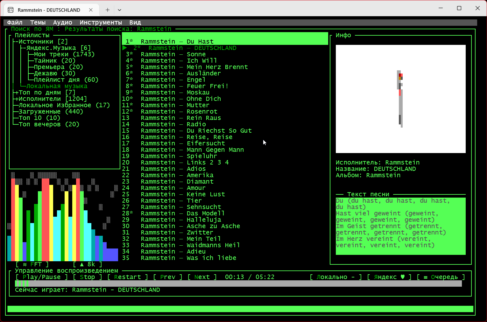

Музыка из Яндекс.Музыки
прямо в терминале
Консольный музыкальный плеер с визуализацией спектра в реальном времени, 10-полосным эквалайзером и умными плейлистами на основе истории прослушивания.

Возможности
Всё необходимое для прослушивания музыки — без выхода из терминала.
Визуализация спектра
8 режимов спектра в реальном времени: столбцы, осциллограф, «туннель», водопад, полярная форма волны и другие.
10-полосный эквалайзер
Визуальное управление и сохранение настроек. Управление командами или горячими клавишами.
Умные плейлисты
Топ 10, Топ вечеров и Топ по дням недели — автоматически из истории ваших прослушиваний.
Избранное
Локальное избранное и синхронизация лайков с Яндекс.Музыкой — одной кнопкой.
Поиск
Локальный поиск по кэшированной библиотеке и полноценный поиск по Яндекс.Музыке.
7 тем оформления
Тёмная, светлая, «Матрица», киберпанк, Nord и другие. Тема сохраняется между запусками.
Командная строка
Полный контроль над плеером через встроенную консоль — без мыши.
Установка
Требуется .NET 8 SDK и токен Яндекс.Музыки.
Темы оформления
Выберите тему в меню «Темы» — она сохранится и применится при следующем запуске.
Использование
Интуитивное управление с клавиатуры: навигация, плейлисты, меню и избранное.
⌨️ Навигация
Стрелки ↑ ↓ ← → — перемещение по трекам и плейлистам. Enter — воспроизведение. Двойной клик — запуск трека.
📂 Плейлисты
«Мои треки», локальное избранное, загруженный кэш, умные топы и ваши персональные плейлисты из аккаунта.
🎛️ Меню
F9 или Alt — открыть меню: файл, темы, аудио, инструменты (поиск, статистика БД).
💾 Офлайн
Автоматическое кэширование треков в tracks/ — музыка доступна без интернета.